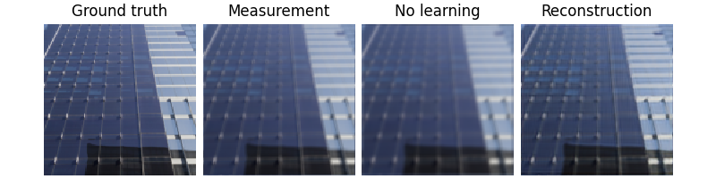
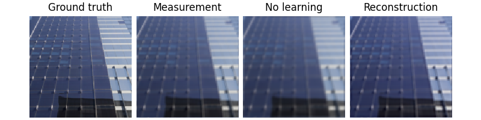

Note
New to DeepInverse? Get started with the basics with the 5 minute quickstart tutorial..
Imaging inverse problems with adversarial networks#
This example shows you how to train various networks using adversarial
training for deblurring problems. We demonstrate running training and
inference using a conditional GAN (i.e. DeblurGAN), CSGM, AmbientGAN and
UAIR implemented in the library, and how to simply train
your own GAN by using deepinv.training.AdversarialTrainer. These
examples can also be easily extended to train more complicated GANs such
as CycleGAN.
This example is based on the papers DeblurGAN [1], Compressed Sensing using Generative Models (CSGM) [2], AmbiantGAN [3], and Unsupervised Adversarial Image Reconstruction (UAIR) [4].
Adversarial networks are characterized by the addition of an adversarial loss \(\mathcal{L}_\text{adv}\) to the standard reconstruction loss:
where \(D(\cdot)\) is the discriminator model, \(x\) is the reference image, \(\hat x\) is the estimated reconstruction, \(q(\cdot)\) is a quality function (e.g \(q(x)=x\) for WGAN). Training alternates between generator \(G\) and discriminator \(D\) in a minimax game. When there are no ground truths (i.e. unsupervised), this may be defined on the measurements \(y\) instead.
from pathlib import Path
import torch
from torch.utils.data import DataLoader, random_split
from torchvision.transforms import Compose, ToTensor, CenterCrop, Resize
import deepinv as dinv
from deepinv.loss import adversarial
from deepinv.utils import get_data_home
from deepinv.physics.generator import MotionBlurGenerator
device = dinv.utils.get_device()
BASE_DIR = Path(".")
DATA_DIR = BASE_DIR / "measurments"
ORGINAL_DATA_DIR = get_data_home() / "Urban100"
Selected GPU 0 with 1763.25 MiB free memory
Generate dataset#
In this example we use the Urban100 dataset resized to 128x128. We apply random
motion blur physics using
deepinv.physics.generator.MotionBlurGenerator, and save the data
using deepinv.datasets.generate_dataset().
physics = dinv.physics.Blur(padding="circular", device=device)
blur_generator = MotionBlurGenerator((11, 11), device=device)
dataset = dinv.datasets.Urban100HR(
root=ORGINAL_DATA_DIR,
download=True,
transform=Compose([ToTensor(), Resize(256), CenterCrop(128)]),
)
train_dataset, test_dataset = random_split(dataset, (0.8, 0.2))
# Generate data pairs x,y offline using a physics generator
dataset_path = dinv.datasets.generate_dataset(
train_dataset=train_dataset,
test_dataset=test_dataset,
physics=physics,
physics_generator=blur_generator,
device=device,
save_dir=DATA_DIR,
batch_size=1,
)
train_dataloader = DataLoader(
dinv.datasets.HDF5Dataset(
dataset_path, train=True, load_physics_generator_params=True
),
shuffle=True,
)
test_dataloader = DataLoader(
dinv.datasets.HDF5Dataset(
dataset_path, train=False, load_physics_generator_params=True
),
shuffle=False,
)
0%| | 0/135388067 [00:00<?, ?it/s]
5%|▍ | 5.94M/129M [00:00<00:02, 62.1MB/s]
13%|█▎ | 17.3M/129M [00:00<00:01, 95.7MB/s]
22%|██■| 28.0M/129M [00:00<00:01, 103MB/s]
30%|██▉ | 38.7M/129M [00:00<00:00, 106MB/s]
38%|███▊ | 48.9M/129M [00:00<00:00, 103MB/s]
47%|████▋ | 61.2M/129M [00:00<00:00, 111MB/s]
56%|█████▌ | 71.9M/129M [00:00<00:00, 111MB/s]
64%|██████■| 82.5M/129M [00:00<00:00, 108MB/s]
73%|███████▎ | 94.1M/129M [00:00<00:00, 107MB/s]
83%|████████▎ | 107M/129M [00:01<00:00, 114MB/s]
91%|█████████ | 118M/129M [00:01<00:00, 113MB/s]
100%|█████████▉| 128M/129M [00:01<00:00, 110MB/s]
100%|██████████| 129M/129M [00:01<00:00, 108MB/s]
Extracting: 0%| | 0/101 [00:00<?, ?it/s]
Extracting: 23%|██▎ | 23/101 [00:00<00:00, 226.43it/s]
Extracting: 52%|█████■| 53/101 [00:00<00:00, 266.50it/s]
Extracting: 79%|███████▉ | 80/101 [00:00<00:00, 245.77it/s]
Extracting: 100%|██████████| 101/101 [00:00<00:00, 247.67it/s]
Dataset has been successfully downloaded.
Dataset has been saved at measurments/dinv_dataset0.h5
Define models#
We first define reconstruction network (i.e conditional generator) and discriminator network to use for adversarial training. For demonstration we use a simple U-Net as the reconstruction network and the discriminator from PatchGAN [5], but these can be replaced with any architecture e.g transformers, unrolled etc. Further discriminator models are in adversarial models.
def get_models(model=None, D=None, lr_g=1e-4, lr_d=1e-4, device=device):
if model is None:
model = dinv.models.UNet(
in_channels=3,
out_channels=3,
scales=2,
circular_padding=True,
batch_norm=False,
).to(device)
if D is None:
D = dinv.models.PatchGANDiscriminator(n_layers=2, batch_norm=False).to(device)
optimizer = dinv.training.adversarial.AdversarialOptimizer(
torch.optim.Adam(model.parameters(), lr=lr_g, weight_decay=1e-8),
torch.optim.Adam(D.parameters(), lr=lr_d, weight_decay=1e-8),
)
scheduler = dinv.training.adversarial.AdversarialScheduler(
torch.optim.lr_scheduler.StepLR(optimizer.G, step_size=5, gamma=0.9),
torch.optim.lr_scheduler.StepLR(optimizer.D, step_size=5, gamma=0.9),
)
return model, D, optimizer, scheduler
Conditional GAN training#
Conditional GANs [1] are a type of GAN where the generator is conditioned on a label or input. In the context of imaging, this can be used to generate images from a given measurement. In this example, we use a simple U-Net as the generator and a PatchGAN discriminator. The forward pass of the generator is given by:
Conditional GAN forward pass:
Conditional GAN loss:
where \(\mathcal{L}_\text{sup}\) is a supervised loss such as pixel-wise MSE or VGG Perceptual Loss.
We next define pixel-wise and adversarial losses as defined above. We use the MSE for the supervised pixel-wise metric for simplicity but this can be easily replaced with a perceptual loss if desired.
We are now ready to train the networks using deepinv.training.AdversarialTrainer.
We load the pretrained models that were trained in the exact same way after 50 epochs,
and fine-tune the model for 1 epoch for a quick demo.
You can find the pretrained models on HuggingFace https://huggingface.co/deepinv/adversarial-demo.
To train from scratch, simply comment out the model loading code and increase the number of epochs.
ckpt = torch.hub.load_state_dict_from_url(
dinv.models.utils.get_weights_url("adversarial-demo", "deblurgan_model.pth"),
map_location=lambda s, _: s,
)
G.load_state_dict(ckpt["state_dict"])
D.load_state_dict(ckpt["state_dict_D"])
optimizer.load_state_dict(ckpt["optimizer"])
trainer = dinv.training.AdversarialTrainer(
model=G,
D=D,
physics=physics,
train_dataloader=train_dataloader,
eval_dataloader=test_dataloader,
epochs=1,
losses=loss_g,
losses_d=loss_d,
optimizer=optimizer,
scheduler=scheduler,
verbose=True,
show_progress_bar=False,
save_path=None,
device=device,
)
G = trainer.train()
Downloading: "https://huggingface.co/deepinv/adversarial-demo/resolve/main/deblurgan_model.pth?download=true" to /local/jtachell/.cache/torch/hub/checkpoints/deblurgan_model.pth
0%| | 0.00/12.7M [00:00<?, ?B/s]
43%|████▎ | 5.50M/12.7M [00:00<00:00, 56.3MB/s]
86%|████████▌ | 10.9M/12.7M [00:00<00:00, 56.3MB/s]
100%|██████████| 12.7M/12.7M [00:00<00:00, 55.9MB/s]
/local/jtachell/deepinv/deepinv/deepinv/training/adversarial.py:165: UserWarning: non_blocking_transfers=True but DataLoader.pin_memory=False; set pin_memory=True to overlap host-device copies with compute.
super().setup_train(**kwargs)
The model has 444867 trainable parameters
/local/jtachell/deepinv/deepinv/deepinv/training/adversarial.py:168: UserWarning: optimizer_step_multi_dataset parameter of Trainer is should be set to `False` when using adversarial trainer. Automatically setting it to `False`.
warnings.warn(
Train epoch 0: SupLoss=0.004, SupAdversarialGeneratorLoss=0.003, TotalLoss=0.007, PSNR=25.134
Eval epoch 0: PSNR=24.721
Best model saved at epoch 1
Test the trained model and plot the results. We compare to the pseudo-inverse as a baseline.
Eval epoch 0: PSNR=24.721, PSNR no learning=23.812
Test results:
PSNR no learning: 23.812 +- 4.224
PSNR: 24.721 +- 3.487
{'PSNR no learning': 23.811522006988525, 'PSNR no learning_std': 4.223702789630766, 'PSNR': 24.72085771560669, 'PSNR_std': 3.4869397117335326}
UAIR training#
Unsupervised Adversarial Image Reconstruction (UAIR) [4] is a method for solving inverse problems using generative models. In this example, we use a simple U-Net as the generator and discriminator, and train using the adversarial loss. The forward pass of the generator is defined as:
UAIR forward pass:
UAIR loss:
We next load the models and construct losses as defined above.
We are now ready to train the networks using deepinv.training.AdversarialTrainer.
Like above, we load a pretrained model trained in the exact same way for 50 epochs,
and fine-tune here for a quick demo with 1 epoch.
ckpt = torch.hub.load_state_dict_from_url(
dinv.models.utils.get_weights_url("adversarial-demo", "uair_model.pth"),
map_location=lambda s, _: s,
)
G.load_state_dict(ckpt["state_dict"])
D.load_state_dict(ckpt["state_dict_D"])
optimizer.load_state_dict(ckpt["optimizer"])
trainer = dinv.training.AdversarialTrainer(
model=G,
D=D,
physics=physics,
train_dataloader=train_dataloader,
eval_dataloader=test_dataloader,
epochs=1,
losses=loss_g,
losses_d=loss_d,
optimizer=optimizer,
scheduler=scheduler,
verbose=True,
show_progress_bar=False,
save_path=None,
device=device,
)
G = trainer.train()
Downloading: "https://huggingface.co/deepinv/adversarial-demo/resolve/main/uair_model.pth?download=true" to /local/jtachell/.cache/torch/hub/checkpoints/uair_model.pth
0%| | 0.00/12.7M [00:00<?, ?B/s]
44%|████■| 5.62M/12.7M [00:00<00:00, 58.7MB/s]
89%|████████▊ | 11.2M/12.7M [00:00<00:00, 58.1MB/s]
100%|██████████| 12.7M/12.7M [00:00<00:00, 59.1MB/s]
The model has 444867 trainable parameters
Train epoch 0: TotalLoss=0.138, PSNR=24.465
Eval epoch 0: PSNR=24.723
Best model saved at epoch 1
Test the trained model and plot the results:
Eval epoch 0: PSNR=24.723, PSNR no learning=23.812
Test results:
PSNR no learning: 23.812 +- 4.224
PSNR: 24.723 +- 3.576
{'PSNR no learning': 23.811522006988525, 'PSNR no learning_std': 4.223702789630766, 'PSNR': 24.722901916503908, 'PSNR_std': 3.5759563452970653}
CSGM / AmbientGAN training#
Compressed Sensing using Generative Models (CSGM) [2] and AmbientGAN [3] are two methods for solving inverse problems using generative models. CSGM uses a generative model to solve the inverse problem by optimising the latent space of the generator. AmbientGAN uses a generative model to solve the inverse problem by optimising the measurements themselves. Both methods are trained using an adversarial loss; the main difference is that CSGM requires a ground truth dataset (supervised loss), while AmbientGAN does not (unsupervised loss).
In this example, we use a DCGAN as the generator and discriminator, and train using the adversarial loss. The forward pass of the generator is given by:
CSGM forward pass at train time:
CSGM/AmbientGAN forward pass at eval time:
CSGM loss:
AmbientGAN loss (where \(\forw{\cdot}\) is the physics):
We next load the models and construct losses as defined above.
G = dinv.models.CSGMGenerator(
dinv.models.DCGANGenerator(output_size=128, nz=100, ngf=32), inf_tol=1e-2
).to(device)
D = dinv.models.DCGANDiscriminator(ndf=32).to(device)
_, _, optimizer, scheduler = get_models(
model=G, D=D, lr_g=2e-4, lr_d=2e-4
) # learning rates from original paper
# For AmbientGAN:
loss_g = adversarial.UnsupAdversarialGeneratorLoss(device=device)
loss_d = adversarial.UnsupAdversarialDiscriminatorLoss(device=device)
# For CSGM:
loss_g = adversarial.SupAdversarialGeneratorLoss(device=device)
loss_d = adversarial.SupAdversarialDiscriminatorLoss(device=device)
As before, we can now train our models. Since inference is very slow for CSGM/AmbientGAN as it requires an optimisation, we only do one evaluation at the end. Note the train PSNR is meaningless as this generative model is trained on random latents. Like above, we load a pretrained model trained in the exact same way for 50 epochs, and fine-tune here for a quick demo with 1 epoch.
ckpt = torch.hub.load_state_dict_from_url(
dinv.models.utils.get_weights_url("adversarial-demo", "csgm_model.pth"),
map_location=lambda s, _: s,
)
G.load_state_dict(ckpt["state_dict"])
D.load_state_dict(ckpt["state_dict_D"])
optimizer.load_state_dict(ckpt["optimizer"])
trainer = dinv.training.AdversarialTrainer(
model=G,
D=D,
physics=physics,
train_dataloader=train_dataloader,
epochs=1,
losses=loss_g,
losses_d=loss_d,
optimizer=optimizer,
scheduler=scheduler,
verbose=True,
show_progress_bar=False,
save_path=None,
device=device,
)
G = trainer.train()
Downloading: "https://huggingface.co/deepinv/adversarial-demo/resolve/main/csgm_model.pth?download=true" to /local/jtachell/.cache/torch/hub/checkpoints/csgm_model.pth
0%| | 0.00/49.3M [00:00<?, ?B/s]
11%|█■| 5.62M/49.3M [00:00<00:00, 58.8MB/s]
23%|██▎ | 11.2M/49.3M [00:00<00:00, 58.4MB/s]
34%|███■| 16.9M/49.3M [00:00<00:00, 58.6MB/s]
46%|████▌ | 22.6M/49.3M [00:00<00:00, 58.8MB/s]
57%|█████▋ | 28.2M/49.3M [00:00<00:00, 57.4MB/s]
69%|██████▊ | 33.9M/49.3M [00:00<00:00, 57.6MB/s]
80%|███████▉ | 39.4M/49.3M [00:00<00:00, 57.5MB/s]
91%|█████████ | 44.9M/49.3M [00:00<00:00, 54.8MB/s]
100%|██████████| 49.3M/49.3M [00:00<00:00, 57.4MB/s]
The model has 3608000 trainable parameters
Train epoch 0: TotalLoss=0.007, PSNR=9.018
Eventually, we run evaluation of the generative model by running test-time optimisation using test measurements. Note that we do not get great results as CSGM / AmbientGAN relies on large datasets of diverse samples, and we run the optimisation to a relatively high tolerance for speed. Improve the results by running the optimisation for longer.
Eval epoch 0: PSNR=9.856, PSNR no learning=23.812
Test results:
PSNR no learning: 23.812 +- 4.224
PSNR: 9.856 +- 0.971
{'PSNR no learning': 23.811522006988525, 'PSNR no learning_std': 4.223702789630766, 'PSNR': 9.855930137634278, 'PSNR_std': 0.9709567747081534}
- References:
Total running time of the script: (0 minutes 17.962 seconds)